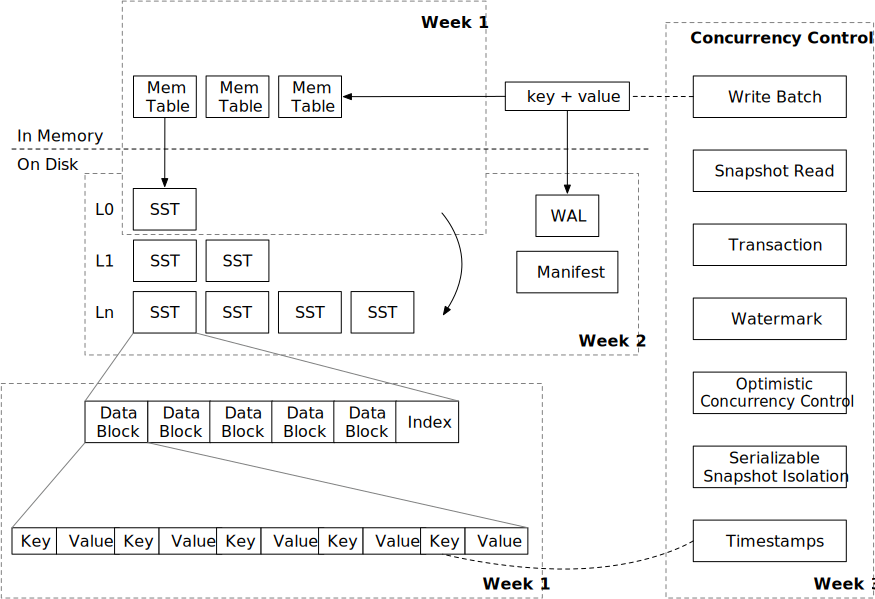

Mini-LSM 课程概览
教程结构

本教程分为三个部分（周）。第一周，我们将重点介绍 LSM 存储引擎的存储结构和存储格式。第二周，我们将深入探讨压缩机制，并为存储引擎实现持久化支持。第三周，我们将实现多版本并发控制。
请查看 环境搭建 以设置环境。
LSM 概述
LSM 存储引擎通常包含三个部分：
- 预写日志（Write-ahead log），用于持久化临时数据以进行恢复。
- 磁盘上的 SST（Sorted String Tables），用于维护 LSM 树结构。
- 内存中的 Mem-table，用于批量处理小写操作。
存储引擎通常提供以下接口：
Put(key, value)：在 LSM 树中存储键值对。Delete(key)：删除键及其对应的值。Get(key)：获取与键对应的值。Scan(range)：获取一系列键值对。
为了确保持久性，
Sync()：确保sync之前的所有操作都持久化到磁盘。
一些引擎选择将 Put 和 Delete 合并为一个名为 WriteBatch 的操作，该操作接受一批键值对。
在本教程中，我们假设 LSM 树使用的是层级压缩算法，这是实际系统中常用的算法。
写路径

LSM 的写路径包含四个步骤：
- 将键值对写入预写日志，以便在存储引擎崩溃后可以恢复。
- 将键值对写入 memtable。完成 (1) 和 (2) 后，我们可以通知用户写操作已完成。
- （在后台运行）当 mem-table 满时，我们将它们冻结为不可变的 mem-table，并在后台将其刷新为磁盘上的 SST 文件。
- （在后台运行）引擎将某些级别的文件压缩到较低级别，以保持 LSM 树的良好形状，从而降低读放大。
读路径
当我们想要读取一个键时，
- 我们将首先从最新的到最旧的 mem-table 进行探测。
- 如果未找到键，我们将搜索包含 SST 的整个 LSM 树以查找数据。
有两种类型的读取：查找和扫描。查找在 LSM 树中查找一个键，而扫描遍历存储引擎中某个范围内的所有键。我们将在整个教程中涵盖这两者。
我们非常欢迎您的反馈。欢迎加入我们的Discord社区。发现问题？请在github.com/skyzh/mini-lsm上创建问题/拉取请求。版权所有 © 2022 - 2024 Alex Chi Z. 保留所有权利。